Handbook
This documentation applies to Audiveris version 4.2 and above.Getting started
Installation
This version of Audiveris runs on Windows and Linux system environments.
Windows
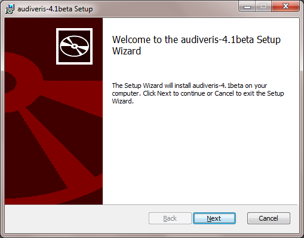
For Windows users, a Microsoft Installer file is available in
the download
area of Audiveris project. Select the latest version
with a .msi extension and click on the link to
start the download.
When the download is complete, simply start the installation by a double click on the downloaded file.
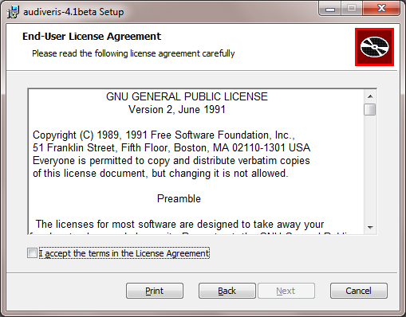
The next screen allows to browse the Audiveris license (GNU GPL V2). If you agree with the license, check the dedicated check box and proceed to the next installation screen.
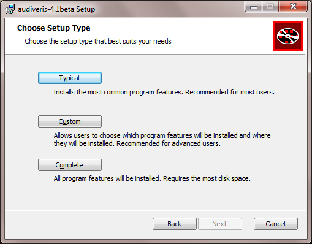
The next screen allows to select the proper setup (typical, custom or complete)
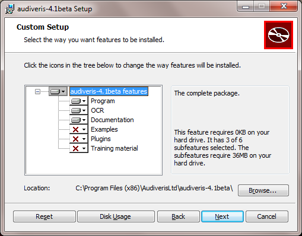
If you select the custom setup, you have the ability to choose the installation location and decide on the installation of optional components (Examples, Plugins, Training material).
Note that you can always change your mind later and add or remove some or all of these optional components. To do so, simply relaunch the installer program, it will prompt you for your new decisions.
Launching Audiveris
To launch Audiveris under Windows use:
Start | All Programs |
audiveris | audiveris application
There are other ways to launch Audiveris, for example to open a Console, to run in batch, to specify launch parameters, etc. These other ways are described in the Command Line Interface section of the Advanced chapter.
At the very first launch, your computer system will be checked for the needed Java runtime (Java 7 as of this writing). If the check fails, you will be prompted by a Launch4j dialog.
By a click on the OK button, you will be connected to the Java download page.
- Make sure to select the Java 7 link (and not Java 6) and choose either the JRE or JDK.
- Download the proper file, Windows x86 (32-bit) or Windows x64 (64-bit), according to your computer hardware architecture.
- A double click on the downloaded file will install the Java environment.
- When the Java installation completes, relaunch Audiveris.
Linux
For Linux, there is yet no integrated installer similar to what we have for Windows system. For the time being, you have to build the application from the sources.
The source distribution is available on the
download area of Audiveris project and matches the
audiveris-V.v.revision-src.zip naming
schema.
Download the distribution file, create a dedicated directory
and expand the downloaded file into this directory.
For further information, see the Building
section.
OCR languages
Audiveris uses Tesseract as the OCR engine to retrieve and transcribe all score text items.
Since OCR language files can exhibit huge sizes, only selected languages are contained in Audiveris installation package. The default languages are: deu, eng, fra et ita.
Your can simply download additional languages and put them
into the ocr/tessdata folder.
All languages files are available for download on the
Tesseract site.
Loading an image
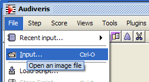The main purpose of a music scanner like Audiveris is to analyze the image of a sheet of music and transcribe it to the standard symbolic format that all other music applications can read and write for further processing.
To load an image, use the menu File |
Input and select some input file.
Another way to load an input file, is to directly use a drag n' drop from the file explorer to the Audiveris application window.
A few hints:
- All major formats are supported, notably PDF, TIFF, JPG, PNG, BMP.
- Prefer gray level images, with pixels value in the 0 - 255 range, to black and white images. Color images are supported as well.
- If you scan paper sheets by yourself, pay attention to the scan resolution. Best results are obtained with resolution around 300 DPI. Lower resolutions may hide key details while higher ones turn quickly into a significant waste of CPU and memory resources.
Transcription
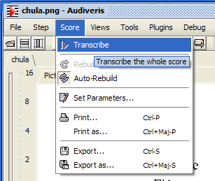
To launch the image transcription, use the menu Score
| Transcribe.
The same action can be launched directly from the toolbar icon

You can as well select the SCORE target through the menu
Step | SCORE.
Don't get too impressed by the list of steps available:
- All steps from
LOADtoSCOREare the mandatory steps. In fact they will be processed as needed in sequence when some output is asked for. See the Command Line Interface section for a quick presentation of the steps sequence and the Internals chapter for further details. - The subsequent steps (
PRINT,EXPORT,PLUGIN), those displayed after the separating line in the step menu, represent the actual outputs. These are the steps that a casual user is interested in.
Main window layout

Within a few seconds after selecting the SCORE step
(or any other subsequent step) you should get a screen similar
to this picture.
Since version 4, Audiveris has merged the former sheet and score views into a single panel. This saves screen space and allows quick visual checking.
Audiveris main window is now composed of 4 panels:
- Sheet
-
This is the large panel in the upper left corner.
ThePicturetab presents the input image, while theDatatab presents the objects (sections and glyphs) extracted from the image. In theDatatab, the objects representing staff lines or stems are drawn as thin lines. - Boards
- The right panel is a vertical set of boards, that are used as both user input and output. Only basic boards are displayed by default. A right click in this column allows to display or hide selected boards.
- Events
- The lower left panel is a log of the main events that occurred so far.
- Errors
- The lower middle panel displays a sorted list of detected errors. A click on an error line in this panel moves you to the related location in the sheet panel.
Sheet display modes
| Picture tab | Data tab | |
|---|---|---|
| Physical mode |

|
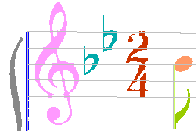 |
| Combined mode | 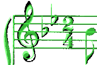 | 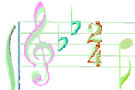 |
| Logical mode |

|

|
For the sheet panel you can choose between 3 display modes:
- The
physicalmode displays the sheet glyphs colorized according to their recognized shape and using their physical coordinates. - The
logicalmode displays the logical score entities built from the interpretation of the physical glyphs. - The
combinedmode is a combination of the physical and logical layers. It displays the logical entities in a translucent manner on top of the physical glyphs.
Using the menu Views | Switch layers
you can circle through
the different modes Physical /
Combined / Logical.
You can also use the F12 function key
or the related toolbar icon

Outputs
The transcription data, which results from the SCORE step, can then be further used by:
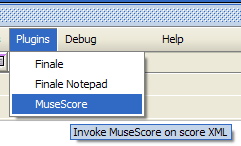- The PRINT step (or the menu
Score|Print...) writes the resulting image into a PDF file. The image is basically the content of thePicturetab inlogicalmode. - The EXPORT step (or the menu
Score|Export...) writes a MusicXML file with the exported score entities. - The PLUGIN step (or any plugin accessed
through the
Pluginsmenu) launches a plugged application on the exported MusicXML file. Refer to the Plugins section for further details.
Note there is no need to manually go through the intermediate steps. For example, loading an input file and selecting a plugin will trigger the steps from SCALE through SCORE + EXPORT + the selected plugin.
Basics
Entities
Let's introduce a short number of basic concepts:
- Pixel
- A pixel is the smallest picture element in the input image. A pixels exhibits a specific color, generally a level of gray. Using a binarization threshold, we can separate foreground (black) pixels from background (white) pixels.
- Run
- A run is a horizontal or vertical vector of pixels of the same color. A black pixel is "assigned" to exactly one run.
- Section
- A section is a sequence of adjacent black runs, all of the same orientation. A run belongs to exactly one section.
- Glyph
- A glyph is nothing but a set of sections, perhaps from different orientations. A section may belong to many overlapping glyphs at the same time, but is assigned at any moment to at most one (active) glyph.

The following picture presents sections at the end of the
GRID step.
We can observe:
- Unassigned vertical sections, displayed in light blue.
- Unassigned horizontal sections, displayed in light pink.
- Horizontal sections assigned to staff line glyphs, and displayed in ivory color.
Main user tools
Selections
There are 2 selections modes, glyph-based (the default) or
section-based.
To switch from one mode to the other, use the toggle menu item
Views | Enable section selection
or the related toolbar icon

In section selection mode, section boundaries are shown while these boundaries do not appear in glyph selection mode. And the mouse-based selection works as expected, pointing to either glyph entities or section entities.
A left-click in an entity area selects this entity (and deselects the entity previously selected if any).
To select several entities:
- Either select each entity, one after the other, keeping the
CTRLkey pressed. - Or, by dragging the mouse while keeping the
SHIFTkey pressed, use a rectangular "lasso" to grab all the entities whose bounds are fully contained by the lasso rectangle.
Boards
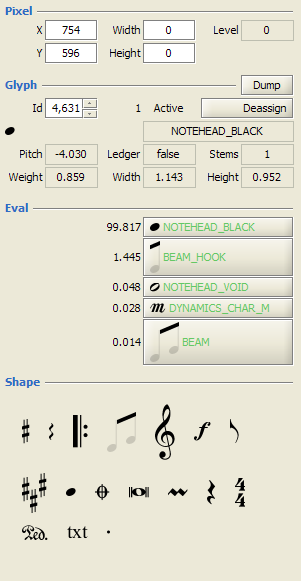 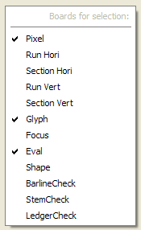By a right-click in boards pane, you get access to boards selection, to customize which boards should be displayed or hidden:
- Pixel
- Displays the current position (point or rectangle)
in pixels.
The
Levelfield gives the level of gray for the selected pixel. Note that apartLevel, all the other fields are both output and input fields. Just modify their values and press return to modify the selected location. - Run (Hori/Vert)
- Displays the current black Run (horizontal or vertical) if any.
- Section (Hori/Vert)
- Display the current Section (horizontal or vertical)
if any.
The
Idfield is both output and input, so a section can be directly selected via its ID. - Glyph
- Displays parameters of the selected Glyph if any.
A glyph is collection of sections, and it is never deleted, therefore it is always accessible via itsId.
A glyph is saidActiveif its sections point back to it, so the selection of one of its sections will select that glyph. - Focus
- Allows to browse the whole sheet for specific shapes.
- Eval
- Displays the result of the glyph evaluation by the
neural network evaluator.
The top 5 best shapes are displayed, with their related grade in range 0..100. A red background color indicates a shape manually discarded. - Shape
- The shape palette gives access to shape families. Within a family, a shape can be assigned (by double-click) or dragged and dropped to a target location.
- Check
- There are several Check boards (Barline, Stem, Ledger). They are meant for the advanced user.
Score parameters

This convenient dialog box gathers a selected number of global
and key score parameters.
It can be accessed through menu Score |
Set parameters... or via the related toolbar icon

- Global parameters (they concern the whole application):
- Call-Stack
- Print out the calling stack whenever some exception is thrown
- Script
- Prompt the user for saving the current script when closing a score
- Drag n' Drop
- Define the default step to be performed when an input file is dropped on the application window
- Key score parameters (they concern just the current score,
unless the box
Set as defaultis checked):- Foreground Pixels
- Define the threshold on gray level to separate foreground pixels (level <= threshold) and background pixels (level > threshold)
- Time Slots
- Define the abscissa margin around time slots (expressed in interline fraction)
- Text
- Define the dominant language for OCR'ed text
- Parts
- Define name and MIDI instrument for each part
Errors window
The PAGES and SCORE steps are able to
detect possible errors and sometimes to correct them
automatically.
Remaining errors are displayed in the error window located at
the bottom of the main window.
The picture next to this paragraph presents the content of this
window after running SCORE on the example image.
If the windows is not displayed, make sure to open it through
menu Views | Display errors window.
The errors list is sorted, and every error message begins with a context indication.
For example, the third error says: S3P1M*14
[glyph#3174] PAGES Dot unassigned.
- The location of this message is coded as
S3P1M*14(System 3, Part 1, Measure 14). The measure number is local to the page, and flagged as such by the '*' character inM*14. - There is also a glyph reference:
glyph#3174 - The step which has detected the error:
PAGES - Finally the message itself:
Dot unassigned.
For any error in the list, simply clicking on it will move the current focus to where the program thinks the error is located.
Glyph merge
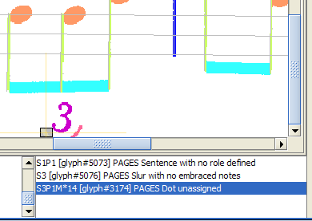Let us take the third error signalled in the error window (Dot unassigned).
A dot-shaped glyph is expected to be assigned a precise
shape (augmentation dot, repeat dot, staccato) depending on
the surrounding entities.
Here none of these assignments was found acceptable.
It's a hint that the glyph #3174 is perhaps not a
dot.
Simply let's click on this error, and the suspicious glyph gets the global focus, as depicted by the image next to this paragraph.
Obviously, this glyph is not a dot. What is it?
It seems to be part of a small half circle, which got cut by the
image border. Let's try to fix that, by "merging" the two parts
of the half circle.
We select the two parts, for example by using a "lasso" as in:

Once the two glyphs are selected, we can click on the
SLUR shape if it appears in the top 5 shapes of
the Eval board.
If not, we use a right-click to get the context popup menu
Glyphs... |
Build compound as... | Others |
SLUR.
The two parts are now merged in a single glyph, which is assigned
the SLUR shape.
Glyph assignment
The previous section (using a glyph merge) has already used a glyph assignment (via Eval board or context menu).
Let's recap the various assignments ways:
- Evaluation board, by clicking in one of the top 5 shapes proposed.
- Context menu, by navigating to the desired shape by
Glyphs...|Assign glyph as...| etc, - Shape palette. In the Shape board, open the proper shape set, and use a double-click on the desired shape.
- Copy / paste a shape from one glyph to another.
Use the context menu on the first glyph and select
Glyphs...|Copy <SHAPE>, then use the context menu on the other glyph and selectGlyphs...|Paste <SHAPE>.
We can add another way, using the Glyph board, since clicking
on the Deassign button allows to manually
deassign a glyph shape.
Glyph split
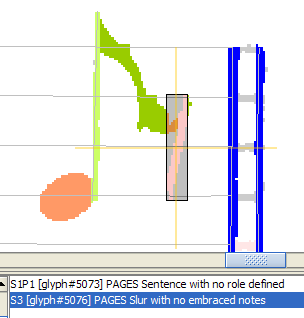Let's click on another signalled error, which says:
S3 [glyph#5076] PAGES Slur with no embraced notes
Here we have a pack of pixels which results from two overlapping objects, a flag and a rest, and the program has been unable to split this big glyph into proper components. Let's do this manually.

We have to work at the section level.
To do so, use Views | Enable section
selection.
The sections boundaries are now visible, as you can see on the
picture next to this paragraph.

Using the left mouse
button, while pressing down the CTRL
key, allows the user to select as many sections as desired.
Since sections are usually small, the selection gesture is a bit
simplified when compared to glyph selection:
You don't even have to release the mouse button when moving from
one section to the other, simply browse the sections as you
would do with an eraser, and all the touched sections will be
added to the selection in a "greedy" mode.
To really remove a given
section from the current selection, release the mouse button and
press down the button again on the section to remove (always
keeping the CTRL key pressed).
Note, as you select the sections of the "eighth rest" portion of
the glyph, that the Eval board continuously tries to recognize
a shape out of the selected sections.
When you have selected all the sections that compose the eighth
rest, the EIGHTH_REST button should appear in the
top 5.
Simply click on the related button, and the shape is assigned
to a new glyph composed of the selected sections.
[You can also, when your section selection is ready, use
a right click to open the context popup menu and use the
Glyphs... | Assign glyph as... item.]

Immediately, the remaining part of the former "big" glyph is recognized as a flag. You can switch back to the normal glyph-level selection mode.
Glyph insertion
In the section above, we have been lucky that the separation between the two glyphs could be found by aggregating sections. But these splits on section borders are not always satisfactory. In that case, the solution is to inject the needed glyphs directly into the sheet structure.

For the sake of example, let's suppose that the split above had not been performed. So, we still have this big glyph instead of clearly separated flag glyph and eighth rest glyph. So we'll inject them.
First let's get rid of assigned shapes (FLAG_1 and
SLUR), by using the Deassign button,
until no more shape is assigned.
Note that when a shape is manually deassigned, the program tries
to assign another shape, hence the need for perhaps multiple
deassignments.
We could also directly assign a CLUTTER shape, to
avoid these multiple deassignments.
The picture presents the "cleaned" glyph.

In the shape palette, we now select the range dedicated to flags, and then drag the suitable flag shape from the palette to the sheet view. In the picture, you can see the ghost image of the flag being dragged.
We pay attention to correctly position the flag along the stem, and we release the mouse button.
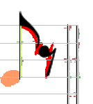
We perform a similar action for the eighth rest, and we have reached the final result.
Just a couple of remarks:
- For certain shapes, like the flag, it is important to position the glyph with a rather good precision, otherwise the distance between the stem and this flag may be larger than the tolerated margin, and the stem and the flag will not be recognized as connected.
- For the time being, the DnD is rudimentary: once a glyph has been dropped, it cannot be moved. The only workaround is to delete this virtual glyph (by deassigning it) and reperform the DnD.
- Another current limitation is that there is yet no way to resize a virtual glyph. So DnD does not really work for such shapes as beams, slurs, crescendos, descrescendos, ... These moving / resizing features are postponed until we integrate a more powerful way to play with glyphs and shape display (certainly the NetBeans Visual Lib).
Text correction
Text-shaped items are processed by the OCR engine to retrieve their actual content.
Make sure to select the proper language to get the best OCR results. You can still change the language afterwards to automatically recall OCR on the detected words, but the best results are achieved when the right language is chosen upfront.
Even with proper language selected, some texts are not correctly OCR'ed.
- In the Chula example at hand, the number "
31" was not detected in the the upper right corner. The solution is to select the glyph by a "lasso" and assign the TEXT shape. This triggers the OCR, which should recognize the proper digits. - Some words may be assigned a wrong OCR value. To fix this, select the related glyph and in the text field of the Glyph board, directly type the correct word value. You can also modify other attributes of the textual glyph, such as the text role or the text type.
Advanced
Command line interface
Here is the summary you get when launching Audiveris with the
-help parameter:
You can also use the executables named audiveris.exe
or audiveris-console.exe which are just wrappers
around the java command.
This command line syntax is also correct:
audiveris.exe [parameters*], it takes the JVM
options declared in the related file
audiveris.l4j.ini.
More explanation on Audiveris parameters:
- -help
- Displays the CLI summary as printed above.
- -batch
- Launches Audiveris without any Graphic User Interface.
- -step (STEPNAME | @STEPLIST)+
- Performs all the specified steps (including the steps which
are mandatory to get to the specified ones).
'STEPNAME' can be any one of the step names (the case is irrelevant).
These steps will be performed on each sheet referenced from the command line. - -option (KEY=VALUE | @OPTIONLIST)+
- Specifies the value of some application parameters (that can
also be set via the pull-down menu
Tools|Options).
You can state key=value pairs or reference an options file (flagged by an @ sign) that lists key=value pairs (or even other files recursively).
A list file is a simple text file, with one key=value pair per line. Nota: The syntax used is the Properties syntax, so for example back-slashes must be escaped. - -script (SCRIPTNAME | @SCRIPTLIST)+
- Specifies some scripts to be read, using the same mechanism
than input command belows.
These script files contain actions generally recorded during a previous run. - -input (FILENAME | @FILELIST)+
- Specifies some image files to be read, either by naming the image file or by referencing (flagged by an @ sign) a file that lists image files (or even other files list recursively). A list file is a simple text file, with one image file name per line.
- -bench (DIRNAME | FILENAME)
- Defines an output path to bench data file (or directory).
This bench data is meant for application monitoring only.
Nota: If the path refers to an existing directory, each processed score will output its bench data to a score specific file created in the provided directory. Otherwise, all bench data, whatever its related score, will be written to the provided single file. - -print (DIRNAME | FILENAME)
- Defines an output path to PDF file (or directory).
Same note as for -bench option. - -export (DIRNAME | FILENAME)
- Defines an output path to MusicXML file (or directory).
Same note as for -bench option.
Script
Every user action that can impact the result is recorded in the current score script.
By default, you are prompted to save the script when the score
is closed.
You can override this behavior via the menu Score |
Set parameters... or directly by setting the
constant omr.script.ScriptActions.closeConfirmation.
For example, say you load the file chula.png, set
the default language to French (code is fra) in the
score parameters and launch the EXPORT step.
You should by default get the following script
(scripts/chula.script.xml):
<?xml version="1.0" encoding="UTF-8" standalone="yes"?>
<script file="examples\chula.png">
<parameters foreground="140" language="fra" slot-margin="0.5" slot-policy="HEAD_BASED"/>
<step name="EXPORT"/>
</script>
Such scripts can be replayed later. Knowledgeable users can even write scripts from scratch and typically submit them in batch mode.
Plugins
The Plugins menu is based on the content of the
plugins folder of Audiveris.
Each file, with a .js extension, found in this
folder gives birth to a corresponding item in the Plugins menu.
/* ------------------------------------------------ */
/* m u s e s c o r e . j s */
/* ------------------------------------------------ */
/* Variable to modify according to your environment */
var pathToExec = "P:/MuseScore/bin/mscore.exe";
/* Title for menu item */
pluginTitle = 'MuseScore';
/* Long description for tool tip */
pluginTip = 'Invoke MuseScore on score XML';
/* Build sequence of command line parameters */
function pluginCli(exportFilePath) {
importPackage(java.util);
return Arrays.asList([pathToExec, exportFilePath]);
}
Let's take the example of musescore.js plugin:
The purpose of a plugin file is to describe the way an executable must be launched. Note that the plugin does not actually call the executable, Audiveris Java application does this, based on the informations provided by the plugin.
The plugin is implemented as a small piece of JavaScript with just 4 items:
- pathToExec
- This local variable defines the exact path to the executable as installed on your own environment. Generally, this item is the only one which needs to be customized.
- pluginTitle
- This variable defines the title to be used by the related menu item.
- pluginTip
- This variable defines a longer string, to be displayed as the tip related to the menu item.
- pluginCli
- This is a function provided with the single parameter
exportFilePathwhich contains the path to the MusicXML file exported by Audiveris. The returned value must be the precise sequence of command arguments used when launching the target executable.
Options
This interface, accessible from menu Tool |
Options, allows to interactively display and
modify data related to Audiveris classes.
The display combines a tree of classes on the left side, and a table on the right side, where details of the logical constants from the containing classes are available for display and modification.

The picture represents a typical Options view:
- We are in the package named
util, (actually, its full name isomr.util, but we drop the ubiquitousomr.prefix) and the class namedOmrExecutors, in charge of the tasks handling. - This class has a logging level, currently assigned to
INFO. This information comes from thesettings/logging.propertiesfile, but can be modified on the fly, thanks to this interface, to any legal logging value (such as DEBUG, INFO, etc...).
NOTA: these logging level modifications are meant to be temporary, and thus not stored on disk. For persistent modification, please edit the logging property file directly. - The class also contains some logical constants, which are
application-level parameters, whose precise value is kept
separate from the algorithmic code.
For example, the constantuseParallelismis aConstant.Boolean. If set to true (its default value) it allows to take advantage of all physical processors available.
To ease the retrieval of pertinent constants, you can use the search field located in the upper part of the Options window. Here, we have just entered the string "parallel" in this field.
How do we define the current value of such logical constant?
The JavaDoc of class omr.constant.ConstantManager
explains the mechanism in details.
In short, the overriding sequence is defined as follows, from
lower to higher priority:
- SOURCE: The default value as defined in the source code
- DEFAULT: The value, if any, found in file
settings/run.default.properties - USER: The value, if any, found in file
run.properties - CLI: The value, if any, specified in the command line by a
-option key=value. The CLI value is persisted in the USER file when running in interactive mode, and not persisted when running in batch. - UI: The value, if any, specified through the
Tools|Optionsuser interface. These UI values are persisted in the USER file.
Training
Audiveris has the ability to train the underlying Neural Network evaluator with representative samples.
Note that the program is released with a pre-trained evaluator so the casual user can safely ignore this training section. However, if the score(s) you want to transcribe use some specific music font significantly different from the provided examples, you may consider training the evaluator to better fit your case.
Persistence of manual assignments
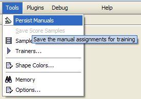
You can set a mode in which any manual assignment will be saved
as a training sample.
This allows to record isolated samples on the fly and thus make
them be available for a future training of the shape evaluator.
This data is saved under the /train/samples folder.
This mode is disabled by default.
To enable the feature, use the
menu item Tools | Persist Manuals.
From that point on, any manually assigned glyph will be saved,
until the program is exited or the mode is manually reset.
Saving all score samples

When you are really confident with all the glyphs recognized in
the current sheet, you can decide to save as a whole the
complete set of glyphs as training samples.
This data is saved under the /train/sheets folder.
Sample verifier
The purpose of this "Sample Verifier" is to provide a user interface to visually review some or all of the various glyphs which are used for training the evaluator.
The main objective is thus to easily identify samples which have been assigned a wrong shape. Using them as part of the training base could severely impact the recognition efficiency of the evaluator. So the strategy, when such a wrong glyph has been identified, is simply to delete the glyph from the base.

Here is an example of the glyph verifier. The top panels are dedicated to selectors, in that order:
- Folders
- This selector allows to select one or several folders to
search for training material within:
/train/symbolsfor artificial symbols,/train/samplesfor isolated samples,/train/sheetsfor whole sheets.
- Shapes
- This selector displays only the shapes contained in the folders selected. Select your shapes of interest.
- Glyphs
- This selector displays only the glyphs corresponding to the shapes selected (within the folders selected). Select your glyphs of interest.
The large panel, on the lower right side, is dedicated to the display of the selected glyphs, using their own coordinates. Notice that glyphs that belong to separate sheets can happen to have close coordinates and thus be displayed as overlapping glyphs.
The lower left panel is composed of two main parts:
- The Sample navigator drives the loading and display of glyphs from the selection that comes out of the selectors. You can browse through the loaded glyphs.
- The Glyph panel, similar to the Glyph board that
appear on the main Audiveris windows, is used to display
information about the glyph at hand, together with the
evaluations performed by the Neural Network evaluator.
The
Removebutton can be used to discard a wrong glyph: this is implemented through the mere deletion of the underlying glyph XML file.
By default, this user interface looks for glyphs files under
the /train directory.
However, from the Trainer user interface,
you can ask to Verify glyphs.
In that case, the Sample verifier interface is
automatically loaded with the glyphs that failed the validation.
Trainer
This interface is dedicated to the training of the Neural Network evaluator.

- Selection
- This panel is in charge of selecting and loading the glyph
XML files, as stored from the predefined symbols and from
previous sheet recognitions.
Use the
Select Corebutton when you want to identify a representative Core part within the whole glyph base. The/train/coredirectory will be emptied and repopulated by the core selected glyph files. - Neural Training
- Here we launch and monitor the training of the neural
network.
On the left, radio buttons allow to select either theWholebase (default option) or theCorebase.The main decision is to choose between a
Re-Train, which consists in retraining from scratch, or only anInc-Train, which works incrementally on top of the previous training sessions.For the advanced user, several convergence parameters can be adjusted (although they should be kept close to their default values): the
MomentumandLearning Rate.The training ends when any of the thresholds
Max Error(residual error) orEpochs(number of iterations) is reached, or when theStopbutton is manually pressed. The trainer continuously stores on disk the snapshot of the latest best configuration. This is the default behavior, but you can also force the trainer, via theUse Lastbutton, to select only the last configuration. - Validation
- At any time, even while the neural network is being trained,
you can test the evaluator against the selected population
(either the Whole base, or the Core base, according to the
selection made via the radio buttons. Note that we can train
and validate on different bases).
The samples which are either not recognized or (worse) mistaken for another shape are pointed out. The corresponding
Verifybuttons launch the Sample verifier on the questionable samples to allow a visual check and perhaps the removal of some of them. - Regression Training
- This allows to compute the parameters of a linear evaluator, which is less and less used. You can safely ignore this.
Internals
Audiveris is not just a music scanning program. It is also a tool meant to ease the analysis and the development of OMR techniques.
To this end, Audiveris is released with an open source license, and this chapter details the purpose and the outputs of each formalized program step.
Load step
This step is usually implicit. Loading an input file, regardless
how this file is selected, is considered as performing the
LOAD step.
At any time, by manually selecting the menu Steps |
Load, you can force the program to reload the input
file and reach again the same final mandatory step.
Scale step
By analyzing the histograms of vertical run lengths for black (foreground) and white (background), the program retrieves key information about the music sheet.
Via File | Display Scale Plots you
can display both histograms.
In this example, the foreground histogram indicates a peak at
value 3
which corresponds to the mean staff line thickness.
If there is no peak above the 10% quorum, the image
is not likely to contain music staves.
The sharpness of this peak is also a good indication of the
scan quality and the width at 15% is used to define
line margins.
The second foreground peak value at 12 is the second
frequent height and thus corresponds to average beam height.

Similarly, the main background peak at 18 relates
to the average background distance from one staff line to the
other.
Adding foreground peak value 3 and background
peak value 18 leads to 21, which
is now considered as the main interline value and thus the
key scaling factor for the sheet at hand.
Grid step
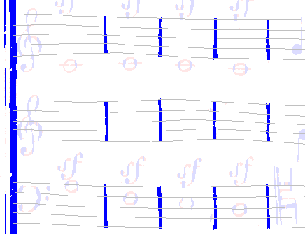By aggregating long horizontal sections into filaments, and gathering filements into clusters of vertically spaced filaments, Audiveris retrieves staves skeletons.
Similarly, long vertical sections are aggregated into barline filaments.
The crossing of these horizontal and vertical filaments, sometimes fairly wavy and therefore implemented as natural splines, represents a kind of "grid". From that point on, this grid is taken as the geometric referential for all other entities.
Note that this intrinsic referential allows Audiveris to directly cope with skewed page and / or wavy lines with no deskewing of other processing.
If you wish, you can still ask Audiveris to produce a "dewarped"
image, by using the referential as the dewarping grid.
Doing so, Audiveris GRID step can also be used as
a standalone image dewarping preprocessor.
To compute and display the dewarped image, simply set the
constant omr.grid.GridBuilder.buildDewarpedTarget
to true,
and to save the dewarped image to disk set the constant
omr.grid.TargetBuilder.storeDewarp to true.
See below the initial (warped) image and the final (dewarped) image. Note the pixels colors are not modified, only their coordinates are.

|
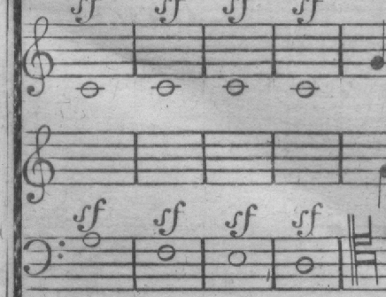 |
Systems step
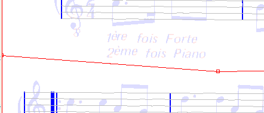
The SYSTEMS step handles the separation between
systems, and the dispatching of all sections and glyphs to
their "containing" system.
From that point on, most processings will be done at system level. This limits the amount of entities (sections & glyphs) to search, and allows to process all systems in parallel, thus taking advantage of the computer hardware architecture.
Audiveris tries to define a "smart" border between adjacent systems which assigns the glyphs to the system they logically belong to.
You can still manually modify the border, by starting a boundary
edition session via the (right-click) context menu
Boundaries... | Start.
The broken lines of all boundaries are highlighted in red color.
With the mouse, you can adjust the border by simply dragging the
lines and points.
When you are done, end the session by
Boundaries... | Complete so that
modifications are immediately taken into account.
Measures step

The MEASURES step uses the barlines candidates to
build and check the measures of every system.
Global measure consistency is further checked for systems that
contain more than a single staff.
Texts step

The TEXTS step works on each system in
parallel.
It first builds an image of the system area, hiding all glyphs which are too wide or too high, or which intersect a staff interior.
It then hands this filtered system image over to the OCR engine, which performs a layout analysis of the image and the transcription of the detected text blocks.
Sticks step
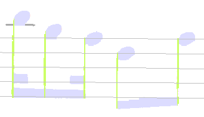
The STICKS step searches systems for sticks, either
horizontal or vertical.
- Horizontal sticks are further checked to be assigned the
LEDGERshape. - Vertical sticks gave birth to
STEMentities.
Symbols step

The SYMBOLS step aggregates unassigned sections
that connect either horizontally or vertically into glyphs.
For each glyph, Audiveris computes a series of key parameters based on ART moments (Angular Radial Transform moments as used by MPEG-7) and feeds the Neural Network evaluator to look for a suitable shape.
Several dedicated patterns are run at system level to further check and correct the glyphs assignments.
The SYMBOLS step iterates at system level on the
cycle: aggregation / assignment / patterns.
The final glyphs are displayed with a color that is specific to their assigned shape.
Pages step

The PAGES step works at page level to translate
all assigned glyphs to their corresponding score logical
entities.
Global consistency checks are run at page level, to adjust parameters such as the time signatures.
Score step

The SCORE step connects the various pages of a
multi-page score (this step is almost void for a single-page
score):
- Connection of system parts (including voices and instruments) across pages
- Global measure numbering
- Use of time signatures to check measure durations
- Connection of orphaned slurs across pages
Using menu Views | Show score voices,
or the related F11 key, you can
visualize the voices with different colors as shown on the
presented picture.
Nota:
- For the time being, the
SCOREstep works on the pages loaded as parts of the multi-page score in memory. - For large scores that won't fit in memory, a different
approach is needed, whereby pages will be separately
recognized and saved as MusicXML files.
An offline final reduction task will then run to connect
these pages XML files.
Further work is still to be done, but a prototype is already
available in the
omr.score.ScoreXmlReductionclass.